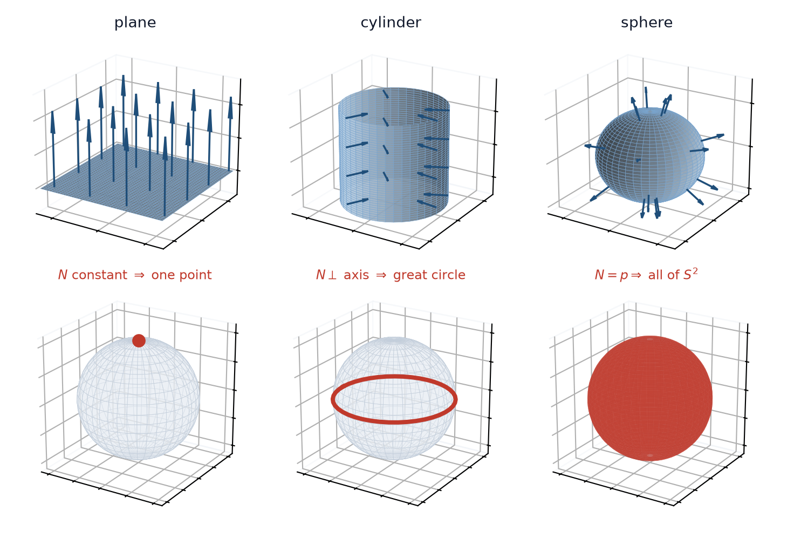

8 תרגול 8: העתקת גאוס והתבנית היסודית השנייה
8.1 העתקת גאוס
עבור עקומות ראינו שחישוב וקטור הנורמל מאפשר לחשב את העקמומיות. נחיל עתה את אותו עקרון על משטחים: נרצה למדוד כמה מהר המשטח \(M\) מתרחק מהמישור המשיק \(T_p \left( M \right)\) בסביבת הנקודה \(p\). הכלי לכך הוא העתקה הרושמת בכל נקודה את הכיוון שאליו המשטח פונה.
הגדרה 8.1.1 — העתקת גאוס.
יהי \(M \subseteq \mathbb{R}^3\) משטח חלק ואוריינטבילי, ויהי \(N : M \to \mathbb{R}^3\) שדה נורמל יחידה חלק, כלומר לכל \(p \in M\) מתקיים \[.\left\| N \left( p \right) \right\| = 1\]
כל ערך של \(N\) הוא וקטור יחידה, ולכן אפשר לקרוא את \(N\) כהעתקה אל ספירת היחידה \[,S^2 = \left\{ x \in \mathbb{R}^3 : \left\| x \right\| = 1 \right\}\] ואז ההעתקה \[N : M \to S^2, \qquad p \mapsto N \left( p \right)\] נקראת העתקת גאוס של \(M\).
בפרמטריזציה מקומית \(\overline{x} \left( u, v \right)\) היא נתונה על ידי \[,N = \frac{\overline{x}_u \times \overline{x}_v}{\left\| \overline{x}_u \times \overline{x}_v \right\|}\] והמכנה אינו מתאפס בדיוק משום שהפרמטריזציה רגולרית. יש בדיוק שתי בחירות אפשריות, \(N\) ו-\(-N\).
הערה 8.1.2 — איך לדמיין את ההעתקה.
בהינתן \(p\), ניקח את הוקטור \(N \left( p \right)\), נזיז את זנבו אל הראשית, ונסמן היכן ראשו נוחת על \(S^2\). הסימון הזה הוא \(N \left( p \right)\) כנקודה על הספירה.
כלומר העתקת גאוס רושמת את הכיוון של המישור המשיק ב-\(p\) ותו לא: שתי נקודות שהמישורים המשיקים בהן מקבילים והנורמלים בהן מצביעים לאותו כיוון, נשלחות לאותה נקודה על הספירה.
הערה 8.1.3 — שלוש תמונות, בלי חישוב.
- מישור. הנורמל \(N\) קבוע, כלומר הוא אותו וקטור בכל נקודה. לכן התמונה שלו על ספירת היחידה מתכווצת לנקודה אחת.
- גליל שכל היוצרים שלו מקבילים לכיוון קבוע \(d\). הנורמל ניצב ליוצרים בכל נקודה, ולכן \(N \left( M \right)\) מוכלת במעגל הגדול \(S^2 \cap d^{\perp}\).
- ספירת היחידה. מתקיים \(N \left( p \right) = \pm p\), ולכן העתקת גאוס היא הזהות או ההעתקה האנטיפודלית, ו-\(N \left( M \right)\) היא כל \(S^2\).
נקודה, עקומה, ספירה שלמה. זהו כבר מדד גס לכמה המשטח מתעקם: ככל שהתמונה מכסה חלק גדול יותר של \(S^2\), כך המישור המשיק נאלץ להסתובב יותר. בהמשך הקורס נהפוך את התצפית הזו למשפט.
בציור שלהלן שלושת המקרים זה לצד זה: בשורה העליונה המשטח עם כמה מן הנורמלים שלו, ובשורה התחתונה תמונת העתקת גאוס שלו על ספירת היחידה.

שאלה 8.1.4.
יהי \(M\) הפרבולואיד האליפטי \(z = x^2 + y^2\), בפרמטריזציה \[.\overline{x} \left( u, v \right) = \left( u, \; v, \; u^2 + v^2 \right)\]
- חשבו את העתקת גאוס \(N\).
- תארו את התמונה \(N \left( M \right) \subseteq S^2\).
פתרון.
שלב 1: הנגזרות החלקיות
נגזור לפי כל אחד מן המשתנים. שני הרכיבים הראשונים נותנים \(1\) ו-\(0\) או להפך, והרכיב השלישי הוא \(u^2 + v^2\): \[.\overline{x}_u = \left( 1, \; 0, \; 2u \right), \qquad \overline{x}_v = \left( 0, \; 1, \; 2v \right)\]
שלב 2: המכפלה הוקטורית
נחשב לפי פיתוח הדטרמיננטה \[.\overline{x}_u \times \overline{x}_v = \begin{vmatrix} \hat{i} & \hat{j} & \hat{k} \\ 1 & 0 & 2u \\ 0 & 1 & 2v \end{vmatrix}\]
נחשב רכיב־רכיב. הרכיב הראשון הוא \[,0 \cdot 2v - 2u \cdot 1 = -2u\] הרכיב השני הוא, עם סימן מינוס לפי כלל הפיתוח, \[,- \left( 1 \cdot 2v - 2u \cdot 0 \right) = -2v\] והרכיב השלישי הוא \[.1 \cdot 1 - 0 \cdot 0 = 1\]
לכן \[.\overline{x}_u \times \overline{x}_v = \left( -2u, \; -2v, \; 1 \right)\]
שלב 3: הנורמה
נחשב \[.\left\| \overline{x}_u \times \overline{x}_v \right\| = \sqrt{\left( -2u \right)^2 + \left( -2v \right)^2 + 1^2} = \sqrt{4u^2 + 4v^2 + 1}\]
הביטוי שתחת השורש הוא לפחות \(1\), ולכן אינו מתאפס לעולם והפרמטריזציה רגולרית בכל נקודה, כמתבקש מגרף של פונקציה חלקה.
שלב 4: העתקת גאוס
נחלק בנורמה ונקבל \[.N \left( u, v \right) = \frac{\overline{x}_u \times \overline{x}_v}{\left\| \overline{x}_u \times \overline{x}_v \right\|} = \frac{1}{\sqrt{4u^2 + 4v^2 + 1}} \left( -2u, \; -2v, \; 1 \right)\]
שלב 5: התמונה מוכלת בחצי הספירה העליון
נסמן \(N = \left( N_1, N_2, N_3 \right)\). הרכיב השלישי הוא \[,N_3 = \frac{1}{\sqrt{4u^2 + 4v^2 + 1}} > 0\] והוא חיובי לכל \(\left( u, v \right)\), שכן שורש של מספר חיובי הוא חיובי. לכן \[.N \left( M \right) \subseteq \left\{ w \in S^2 : w_3 > 0 \right\}\]
שלב 6: כל נקודה כזו מתקבלת
יהי \(w = \left( w_1, w_2, w_3 \right) \in S^2\) עם \(w_3 > 0\). השוואת הרכיב הראשון והשלישי בשלב 4 מציעה את הבחירה \[,u = -\frac{w_1}{2 w_3}, \qquad v = -\frac{w_2}{2 w_3}\] ונבדוק שהיא אכן עובדת. עם הערכים האלה \[,\left( -2u, \; -2v, \; 1 \right) = \left( \frac{w_1}{w_3}, \; \frac{w_2}{w_3}, \; 1 \right) = \frac{1}{w_3} \left( w_1, \; w_2, \; w_3 \right)\] וזוהי כפולה חיובית של \(w\), שכן \(w_3 > 0\).
נרמול של כפולה חיובית של וקטור יחידה מחזיר את הוקטור עצמו, ולכן \(N \left( u, v \right) = w\).
מסקנה
קיבלנו ש-\(N \left( M \right)\) היא בדיוק חצי הספירה העליון הפתוח, והעתקת גאוס היא חד־חד ערכית ועל אליו, שכן שלב 6 משחזר את \(\left( u, v \right)\) באופן יחיד מתוך \(w\).
הקוטב הצפוני \(\left( 0, 0, 1 \right)\) נמצא בתמונה, ומתקבל בקודקוד \(u = v = 0\). קו המשווה אינו בתמונה: נקודה עליו דורשת \(w_3 = 0\), כלומר מישור משיק אנכי, ולפרבולואיד הזה אין מישור משיק כזה.
בדיקת שפיות
בקודקוד הנורמל הוא \(\left( 0, 0, 1 \right)\) ומצביע ישר למעלה, החוצה מתחתית הקערה, וזה מתאים לאוריינטציה שבחרנו. כאשר \(u^2 + v^2 \to \infty\) המשטח נעשה תלול יותר, \(N_3 \to 0\), והתמונה מתקרבת אל קו המשווה בלי להגיע אליו. האוריינטציה האחרת, \(-N\), נותנת את חצי הספירה התחתון הפתוח.
מה זה ממחיש
לתמונת גאוס כאן יש שטח חיובי, בשונה מן המישור, שתמונתו נקודה, ומן הגליל, שתמונתו עקומה, כפי שראינו בהערה 8.1.3. בהמשך הקורס זה יתורגם לאמירה שעקמומיות גאוס של הפרבולואיד חיובית בכל נקודה, בעוד שעל המישור ועל הגליל היא מתאפסת.
8.2 אופרטור הצורה
העתקת גאוס רושמת את הכיוון שאליו המשטח פונה. מה שאנחנו רוצים באמת הוא כמה מהר הכיוון הזה משתנה, ולכן נגזור אותה.
הגדרה 8.2.1 — הדיפרנציאל של העתקת גאוס.
ההעתקה \(N : M \to S^2\) היא העתקה חלקה בין שני משטחים, ולכן בכל נקודה \(p\) יש לה דיפרנציאל \[.dN_p : T_p \left( M \right) \to T_{N \left( p \right)} \left( S^2 \right)\]
המישור המשיק ל-\(S^2\) בנקודה \(q\) הוא המישור העובר דרך הראשית וניצב ל-\(q\). עבור \(q = N \left( p \right)\) זהו המישור הניצב ל-\(N \left( p \right)\), כלומר בדיוק \(T_p \left( M \right)\). לכן הדיפרנציאל הוא העתקה לינארית מן המישור המשיק אל עצמו, \[.dN_p : T_p \left( M \right) \to T_p \left( M \right)\]
הגדרה 8.2.2 — אופרטור הצורה.
אופרטור הצורה בנקודה \(p\) הוא \[.S_p = -dN_p : T_p \left( M \right) \to T_p \left( M \right)\]
סימן המינוס הוא מוסכמה, והוא חוסך סימני מינוס בנוסחאות שיבואו בהמשך.
הערה 8.2.3 — מה מודד אופרטור הצורה.
הביטוי \(dN_p \left( v \right)\) הוא הנגזרת הכיוונית של \(N\) בכיוון \(v\): ניקח עקומה \(\gamma\) על \(M\) עם \(\gamma \left( 0 \right) = p\) ו-\(\gamma' \left( 0 \right) = v\), ונגזור את \(N \left( \gamma \left( t \right) \right)\) בנקודה \(t = 0\).
לכן \(S_p \left( v \right)\) הוא הקצב שבו הנורמל נוטה כאשר יוצאים מ-\(p\) בכיוון \(v\), עם סימן הפוך.
הערה 8.2.4 — בקואורדינטות.
עבור \(\gamma \left( t \right) = \overline{x} \left( u \left( t \right), v \left( t \right) \right)\) כלל השרשרת נותן \[,\frac{d}{dt} N \left( u \left( t \right), v \left( t \right) \right) \bigg|_{t = 0} = N_u \, u' \left( 0 \right) + N_v \, v' \left( 0 \right)\] ולכן על הבסיס \(\left\{ \overline{x}_u, \overline{x}_v \right\}\) מתקיים \[,dN_p \left( \overline{x}_u \right) = N_u, \qquad dN_p \left( \overline{x}_v \right) = N_v\] כלומר \[.S_p \left( \overline{x}_u \right) = -N_u, \qquad S_p \left( \overline{x}_v \right) = -N_v\]
שתי הטענות הבאות הוכחו בהרצאה, ונשתמש בשתיהן שוב ושוב.
למה 8.2.5 — הנגזרות של הנורמל.
בכל פרמטריזציה מתקיים \[,\left\langle N_u, \overline{x}_u \right\rangle = -\left\langle N, \overline{x}_{uu} \right\rangle, \qquad \left\langle N_v, \overline{x}_v \right\rangle = -\left\langle N, \overline{x}_{vv} \right\rangle\] וכן \[.\left\langle N_u, \overline{x}_v \right\rangle = \left\langle N_v, \overline{x}_u \right\rangle = -\left\langle N, \overline{x}_{uv} \right\rangle\]
טענה 8.2.6 — אופרטור הצורה צמוד לעצמו.
לכל \(w_1, w_2 \in T_p \left( M \right)\) מתקיים \[.\left\langle S_p \left( w_1 \right), w_2 \right\rangle = \left\langle w_1, S_p \left( w_2 \right) \right\rangle\]
השורה השנייה בלמה 8.2.5 היא בדיוק הטענה הזו עבור וקטורי הבסיס.
הערה 8.2.7 — מדוע התכונה הזו חשובה.
לאופרטור צמוד לעצמו על מרחב מכפלה פנימית דו־ממדי יש ערכים עצמיים ממשיים ובסיס אורתונורמלי של וקטורים עצמיים. הערכים והוקטורים האלה ייקראו העקמומיויות הראשיות והכיוונים הראשיים, והם יעמדו במרכז ההמשך. הצורה של \(M\) בסביבת \(p\) אצורה כולה ב-\(S_p\).
שאלה 8.2.8.
- יהי \(M\) הספירה ברדיוס \(r\) שמרכזה בראשית, עם נורמל היחידה החיצוני. הראו ש-\(N \left( p \right) = \frac{p}{r}\), וחשבו את \(S_p\) בכל נקודה בלי לבחור פרמטריזציה.
- יהי \(M\) מישור. חשבו את \(S_p\).
- על משטח אוריינטבילי כלשהו נחליף את הנורמל הנבחר \(N\) ב-\(-N\). מה קורה ל-\(S_p\), לערכים העצמיים שלו ולוקטורים העצמיים שלו?
פתרון.
סעיף 1, שלב א: הנורמל
כאן \(M = \left\{ p \in \mathbb{R}^3 : \left\| p \right\| = r \right\}\). תהי \(p \in M\) ותהי \(\gamma\) עקומה כלשהי על \(M\) עם \(\gamma \left( 0 \right) = p\).
מכיוון שהעקומה נמצאת על הספירה מתקיים \[\left\langle \gamma \left( t \right), \gamma \left( t \right) \right\rangle = r^2\] לכל \(t\). נגזור את שני האגפים לפי \(t\). אגף ימין קבוע ולכן נגזרתו מתאפסת, ובאגף שמאל נשתמש בכלל המכפלה למכפלה סקלרית: \[,2 \left\langle \gamma' \left( t \right), \gamma \left( t \right) \right\rangle = 0\] ובפרט עבור \(t = 0\) מתקבל \[.\left\langle \gamma' \left( 0 \right), p \right\rangle = 0\]
כל וקטור משיק ב-\(p\) מתקבל כ-\(\gamma' \left( 0 \right)\) של עקומה כזו, ולכן \(p \perp T_p \left( M \right)\). הנורמה של \(\frac{p}{r}\) היא \(\frac{r}{r} = 1\), ולכן נורמל היחידה החיצוני הוא \(N \left( p \right) = \frac{p}{r}\).
סעיף 1, שלב ב: הדיפרנציאל
יהי \(v \in T_p \left( M \right)\), ותהי \(\gamma\) עקומה על \(M\) עם \(\gamma \left( 0 \right) = p\) ו-\(\gamma' \left( 0 \right) = v\). לאורך העקומה \[,N \left( \gamma \left( t \right) \right) = \frac{\gamma \left( t \right)}{r}\] ונגזור לפי \(t\) בנקודה \(t = 0\). המספר \(\frac{1}{r}\) קבוע ולכן יוצא מן הגזירה: \[.dN_p \left( v \right) = \frac{\gamma' \left( 0 \right)}{r} = \frac{1}{r} v\]
הסיבה שהחישוב כה קצר היא שההעתקה \(p \mapsto \frac{p}{r}\) היא הצמצום ל-\(M\) של העתקה לינארית על \(\mathbb{R}^3\), והדיפרנציאל של העתקה לינארית הוא ההעתקה עצמה.
סעיף 1, שלב ג: אופרטור הצורה
לפי הגדרה 8.2.2 \[.S_p = -dN_p = -\frac{1}{r} \, \mathrm{Id}\]
כל וקטור משיק הוא וקטור עצמי, והערך העצמי היחיד הוא \(-\frac{1}{r}\).
סעיף 2: המישור
על מישור הנורמל הוא אותו וקטור בכל נקודה, כלומר \(N\) קבועה. הנגזרת הכיוונית של פונקציה קבועה מתאפסת בכל כיוון, ולכן \[.dN_p = 0, \qquad S_p = 0\]
שני הערכים העצמיים הם \(0\).
סעיף 3: היפוך האוריינטציה
נסמן \(\widetilde{N} = -N\). הגזירה לינארית בשדה, ולכן \(d\widetilde{N}_p = -dN_p\), ומכאן \[.\widetilde{S}_p = -d\widetilde{N}_p = dN_p = -S_p\]
אופרטור הצורה מחליף סימן. לכן לכל וקטור \(w\) ולכל סקלר \(\lambda\) \[,S_p \left( w \right) = \lambda w \iff \widetilde{S}_p \left( w \right) = -\lambda w\] כלומר הערכים העצמיים מחליפים סימן והוקטורים העצמיים אינם משתנים.
בדיקת שפיות
בחירת הנורמל הפנימי על הספירה פירושה \(\widetilde{N} \left( p \right) = -\frac{p}{r}\), וסעיף 3 חוזה שאז \(\widetilde{S}_p = +\frac{1}{r} \mathrm{Id}\) עם ערך עצמי \(+\frac{1}{r}\). אכן, חזרה על שלב ב עם \(\widetilde{N}\) נותנת בדיוק זאת.
מה זה ממחיש
שני דברים.
ראשית, על הספירה אופרטור הצורה הוא כפולה של הזהות: הספירה מתעקמת באותה מידה בכל כיוון, והמידה היא \(\frac{1}{r}\), כלומר הופכי הרדיוס, בדיוק כמו העקמומיות של מעגל ברדיוס \(r\) במישור.
שנית, הסימן של \(S_p\) אינו תכונה של המשטח לבדו, אלא תלוי בשאלה איזה צד בחרנו לקרוא לו החוץ. כל אובייקט שנבנה מ-\(S_p\) חייב לעבור את המבחן הזה. שימו לב כבר עכשיו ששני הערכים העצמיים של הספירה הם \(-\frac{1}{r}\), ובבחירה האחרת שניהם \(+\frac{1}{r}\): המכפלה שלהם היא \(\frac{1}{r^2}\) בשני המקרים, ואילו הסכום מחליף סימן. בהמשך הקורס נהפוך את התצפית הזו להגדרה.
8.3 התבנית היסודית השנייה
נקבע נקודה \(p = \overline{x} \left( u, v \right)\). כאשר הפרמטרים זזים אל \(\left( u + \Delta u, \; v + \Delta v \right)\), המשטח מתרחק מן המישור המשיק שלו ב-\(p\), והמידה שבה הוא מתרחק היא הרכיב של ההזזה בכיוון הנורמל, כלומר \[.d \left( \Delta u, \Delta v \right) = \left\langle \overline{x} \left( u + \Delta u, \; v + \Delta v \right) - \overline{x} \left( u, v \right), \; N \right\rangle\]
לפי משפט טיילור בשני משתנים \[\begin{aligned} \overline{x} \left( u + \Delta u, v + \Delta v \right) - \overline{x} \left( u, v \right) = \; & \overline{x}_u \Delta u + \overline{x}_v \Delta v \\ + \; & \frac{1}{2} \left( \overline{x}_{uu} \Delta u^2 + 2 \overline{x}_{uv} \Delta u \Delta v + \overline{x}_{vv} \Delta v^2 \right) + R, \end{aligned}\] כאשר השארית מקיימת \(\frac{R}{\Delta u^2 + \Delta v^2} \to 0\).
הוקטורים \(\overline{x}_u\) ו-\(\overline{x}_v\) משיקים למשטח ולכן ניצבים ל-\(N\), ומכאן שכל האיבר מסדר ראשון מתאפס כאשר לוקחים מכפלה סקלרית עם \(N\). מה שנותר הוא \[,d \left( \Delta u, \Delta v \right) = \frac{1}{2} \left( L_{11} \Delta u^2 + 2 L_{12} \Delta u \Delta v + L_{22} \Delta v^2 \right) + \left\langle R, N \right\rangle\] כאשר \(L_{ij} = \left\langle \overline{x}_{ij}, N \right\rangle\).
עבור עקומה, ההתרחקות מן הישר המשיק היא \(\frac{1}{2} \kappa \left( \Delta t \right)^2 + \ldots\), והמספר היחיד \(\kappa\) מדד את ההתעקמות. עבור משטח ההתרחקות מן המישור המשיק היא תבנית ריבועית ב-\(\left( \Delta u, \Delta v \right)\) ולא מספר בודד, שכן עכשיו יש הרבה כיוונים שבהם אפשר להתרחק. התבנית הריבועית הזו היא התבנית היסודית השנייה.
הגדרה 8.3.1 — התבנית היסודית השנייה.
לכל \(w_1, w_2 \in T_p \left( M \right)\) נגדיר \[.II_p \left( w_1, w_2 \right) = -\left\langle dN_p \left( w_1 \right), \; w_2 \right\rangle = \left\langle S_p \left( w_1 \right), \; w_2 \right\rangle\]
התבנית בילינארית, בהיותה העתקה לינארית שאחריה מכפלה סקלרית, והיא סימטרית משום ש-\(S_p\) צמוד לעצמו לפי טענה 8.2.6. התבנית הריבועית הנלווית לה היא \(II_p \left( w \right) = II_p \left( w, w \right)\).
הגדרה 8.3.2 — מקדמי התבנית היסודית השנייה.
בבסיס \(\left\{ \overline{x}_1, \overline{x}_2 \right\} = \left\{ \overline{x}_u, \overline{x}_v \right\}\) נסמן \[.L_{ij} = II \left( \overline{x}_i, \overline{x}_j \right)\]
עבור \(v = v^i \overline{x}_i\) ו-\(w = w^j \overline{x}_j\) הבילינאריות נותנת \[,II \left( v, w \right) = v^i w^j L_{ij} = \left[ v \right]^t \left( L_{ij} \right) \left[ w \right]\] בדיוק כפי ש-\(g_{ij}\) מייצגים את התבנית היסודית הראשונה.
טענה 8.3.3 — שתי נוסחאות למקדמים.
מתקיים \[,L_{ij} = -\left\langle N_i, \; \overline{x}_j \right\rangle = \left\langle \overline{x}_{ij}, \; N \right\rangle\] כלומר \[,L_{11} = -\left\langle N_u, \overline{x}_u \right\rangle = \left\langle \overline{x}_{uu}, N \right\rangle\] וכן \[,L_{12} = L_{21} = -\left\langle N_u, \overline{x}_v \right\rangle = \left\langle \overline{x}_{uv}, N \right\rangle\] ולבסוף \[.L_{22} = -\left\langle N_v, \overline{x}_v \right\rangle = \left\langle \overline{x}_{vv}, N \right\rangle\]
השוויון השני הוא למה 8.2.5. שימו לב שהסימטריה \(L_{12} = L_{21}\) מתקבלת בחינם מן השוויון \(\overline{x}_{uv} = \overline{x}_{vu}\), וזו אותה עובדה עצמה שממנה נובעת הצמידות לעצמו של \(S_p\).
הערה 8.3.4 — באיזו נוסחה כדאי להשתמש.
הביטוי \(\left\langle \overline{x}_{ij}, N \right\rangle\) דורש רק את הנגזרות השניות של \(\overline{x}\) ואת הוקטור \(N\) עצמו. הביטוי \(-\left\langle N_i, \overline{x}_j \right\rangle\) דורש את \(N_u\) ואת \(N_v\), ו-\(N\) היא מכפלה וקטורית מנורמלת, כלומר גזירה שלה מחייבת כלל מנה על שורש.
בכל התרגילים שלהלן נשתמש בנוסחה הימנית.
טענה 8.3.5 — המטריצה המייצגת את אופרטור הצורה.
בבסיס \(\left\{ \overline{x}_1, \overline{x}_2 \right\}\) מתקיים \[,L_{ij} = L^k_i g_{kj}\] כלומר כמטריצות \(\left( L_{ij} \right) = \left( g_{ij} \right) \left( L^i_j \right)\), ומכיוון שמטריצת המטריקה הפיכה \[.\left( L^i_j \right) = \left( g^{ij} \right) \left( L_{ij} \right), \qquad L^i_j = g^{ik} L_{kj}\]
הערה 8.3.6 — שתי המטריצות הן אובייקטים שונים.
המטריצה \(\left( L_{ij} \right)\) סימטרית, אך היא אינה מטריצה מייצגת של אופרטור. המטריצה \(\left( L^i_j \right)\) כן מייצגת את \(S_p\), והיא בדרך כלל אינה סימטרית.
הערכים העצמיים שיעניינו אותנו בהמשך הם הערכים העצמיים של \(\left( L^i_j \right)\), לעולם לא של \(\left( L_{ij} \right)\). השתיים מתלכדות רק כאשר \(\left( g_{ij} \right)\) היא מטריצת הזהות.
הערה 8.3.7 — המישור.
עבור המישור \(\overline{x} \left( u, v \right) = a + up + vq\) כל הנגזרות השניות מתאפסות, ולכן \(L_{ij} = 0\) והתבנית היסודית השנייה מתאפסת. בהמשך נראה שתכונה זו מאפיינת את המישור.
שאלה 8.3.8.
עבור הפרבולואיד האליפטי \(\overline{x} \left( u, v \right) = \left( u, \; v, \; u^2 + v^2 \right)\) חשבו את המטריצה \(\left( L_{ij} \right)\) ורשמו את התבנית היסודית השנייה. לאחר מכן הציבו בראשית וחשבו שם את \(\left( L^i_j \right)\).
פתרון.
שלב 1: מה שכבר בידינו
משאלה 8.1.4 ידוע ש-\(\overline{x}_u = \left( 1, 0, 2u \right)\) וכן \(\overline{x}_v = \left( 0, 1, 2v \right)\), ושהנורמל הוא \[.N = \lambda \left( -2u, \; -2v, \; 1 \right), \qquad \lambda = \frac{1}{\sqrt{4u^2 + 4v^2 + 1}}\]
שלב 2: הנגזרות השניות
נגזור שוב את \(\overline{x}_u\) ואת \(\overline{x}_v\). רק הרכיב השלישי תלוי בפרמטרים, ולכן \[.\overline{x}_{uu} = \left( 0, 0, 2 \right), \qquad \overline{x}_{uv} = \left( 0, 0, 0 \right), \qquad \overline{x}_{vv} = \left( 0, 0, 2 \right)\]
שלב 3: המקדמים
נשתמש בנוסחה הימנית מטענה 8.3.3. בכל אחת מן המכפלות שני הרכיבים הראשונים של הנגזרת השנייה מתאפסים, ולכן נותר רק המכפלה של \(2\) ברכיב השלישי של \(N\), שהוא \(\lambda\): \[,L_{11} = \left\langle \left( 0, 0, 2 \right), \; \lambda \left( -2u, -2v, 1 \right) \right\rangle = 2 \lambda\] וכן \[,L_{12} = \left\langle \left( 0, 0, 0 \right), \; N \right\rangle = 0\] ולבסוף \[.L_{22} = \left\langle \left( 0, 0, 2 \right), \; \lambda \left( -2u, -2v, 1 \right) \right\rangle = 2 \lambda\]
לכן \[,\left( L_{ij} \right) = 2 \lambda \begin{pmatrix} 1 & 0 \\ 0 & 1 \end{pmatrix} = \frac{2}{\sqrt{4u^2 + 4v^2 + 1}} \begin{pmatrix} 1 & 0 \\ 0 & 1 \end{pmatrix}\] והתבנית היסודית השנייה היא \(2 \lambda \left( du^2 + dv^2 \right)\).
שלב 4: הצבה בראשית
נציב \(u = v = 0\). אז \(\lambda = 1\), וכן \(\overline{x}_u = \left( 1, 0, 0 \right)\), \(\overline{x}_v = \left( 0, 1, 0 \right)\) ו-\(N = \left( 0, 0, 1 \right)\). מכאן \[,\left( g_{ij} \right) = \begin{pmatrix} 1 & 0 \\ 0 & 1 \end{pmatrix}, \qquad \left( L_{ij} \right) = \begin{pmatrix} 2 & 0 \\ 0 & 2 \end{pmatrix}\] וגם \(\left( g^{ij} \right)\) היא מטריצת הזהות, ולכן לפי טענה 8.3.5 \[.\left( L^i_j \right) = \left( g^{ij} \right) \left( L_{ij} \right) = \begin{pmatrix} 2 & 0 \\ 0 & 2 \end{pmatrix}\]
שני הערכים העצמיים שווים ל-\(2\), וכל וקטור משיק בראשית הוא וקטור עצמי.
מה זה ממחיש
בראשית המישור המשיק הוא מישור \(xy\), ונוסחת ההתרחקות חוזה \[.\frac{1}{2} \left( 2 \Delta u^2 + 2 \Delta v^2 \right) = \Delta u^2 + \Delta v^2\]
אבל המשטח הוא \(z = u^2 + v^2\), ולכן ההתרחקות היא בדיוק \(\Delta u^2 + \Delta v^2\) בלי שום שארית. עבור משטח ממעלה שנייה הרשום כגרף, הקירוב מסדר שני בקודקוד אינו קירוב אלא המשטח עצמו. זו ההמחשה החדה ביותר למה שהתבנית היסודית השנייה מודדת.
בדיקת שפיות
מתקיים \(L_{11} = L_{22} = 2 \lambda > 0\) וכן \(L_{12} = 0\) בכל נקודה, ולכן ההתרחקות \(\frac{1}{2} \cdot 2 \lambda \left( \Delta u^2 + \Delta v^2 \right)\) חיובית בכל כיוון. מכאן שהפרבולואיד נשאר כולו בצד אחד של כל אחד מן המישורים המשיקים שלו, הצד שאליו מצביע הנורמל, וזה בדיוק מה שקערה עושה.
שאלה 8.3.9.
תהי \(\overline{x} : U \to \mathbb{R}^3\) פרמטריזציה רגולרית של משטח, כאשר \(U \subseteq \mathbb{R}^2\) פתוחה וקשירה, ונניח שהתבנית היסודית השנייה מתאפסת בכל נקודה. הוכיחו שהתמונה \(\overline{x} \left( U \right)\) מוכלת במישור.
זהו האנלוג למשטחים של המשפט שלפיו עקומה שעקמומיותה מתאפסת זהותית היא חלק מישר.
פתרון.
שלב 1: שלושת הוקטורים מהווים בסיס
הפרמטריזציה רגולרית, ולכן \(\overline{x}_u \times \overline{x}_v \neq 0\), ומכאן ש-\(\overline{x}_u\) ו-\(\overline{x}_v\) בלתי תלויים לינארית. הוקטור \(N\) שונה מאפס וניצב לפרישה שלהם, ולכן הוא בלתי תלוי בהם.
שלושה וקטורים בלתי תלויים ב-\(\mathbb{R}^3\) מהווים בסיס, ולכן \(\left\{ \overline{x}_u, \overline{x}_v, N \right\}\) הוא בסיס של \(\mathbb{R}^3\).
שלב 2: ל-\(N_u\) אין רכיב בכיוון \(N\)
מתקיים \(\left\langle N, N \right\rangle = 1\) בכל נקודה, ולכן אפשר לגזור את הזהות הזו לפי \(u\). אגף ימין קבוע ונגזרתו מתאפסת, ולכן \[,2 \left\langle N_u, N \right\rangle = 0\] כלומר \[.\left\langle N_u, N \right\rangle = 0\]
שלב 3: ל-\(N_u\) אין גם רכיב משיק
לפי טענה 8.3.3 ולפי ההנחה שכל המקדמים מתאפסים, \[.\left\langle N_u, \overline{x}_u \right\rangle = -L_{11} = 0, \qquad \left\langle N_u, \overline{x}_v \right\rangle = -L_{12} = 0\]
שלב 4: מכאן ששתי הנגזרות של הנורמל מתאפסות
שלבים 2 ו-3 אומרים ש-\(N_u\) ניצב לשלושת וקטורי הבסיס משלב 1, ולכן הוא ניצב לכל \(\mathbb{R}^3\), ובפרט לעצמו: \[,\left\langle N_u, N_u \right\rangle = 0\] ולכן \(N_u = 0\).
אותם שלושה שלבים עם \(v\) במקום \(u\), תוך שימוש ב-\(L_{12} = L_{22} = 0\), נותנים \(N_v = 0\).
שלב 5: הנורמל קבוע
שתי הנגזרות החלקיות של \(N\) מתאפסות על הקבוצה הפתוחה והקשירה \(U\), ולכן \(N\) היא וקטור קבוע, ונסמן אותו \(N_0\).
שלב 6: המכפלה הסקלרית עם הנורמל קבועה
נגזור את הפונקציה \(\left\langle \overline{x}, N_0 \right\rangle\) לפי \(u\). הוקטור \(N_0\) קבוע ולכן אינו תורם לכלל המכפלה, ומתקבל \[,\frac{\partial}{\partial u} \left\langle \overline{x}, N_0 \right\rangle = \left\langle \overline{x}_u, N_0 \right\rangle = 0\] שכן \(N_0 = N\) ניצב למשטח. באותו אופן הנגזרת לפי \(v\) מתאפסת.
שתי הנגזרות החלקיות מתאפסות על \(U\) הקשירה, ולכן \(\left\langle \overline{x}, N_0 \right\rangle \equiv c\) עבור קבוע \(c\) כלשהו.
שלב 7: מסקנה
כל נקודה \(q = \overline{x} \left( u, v \right)\) בתמונה מקיימת \[,\left\langle q, \; N_0 \right\rangle = c\] וזו בדיוק משוואת המישור שהנורמל שלו הוא \(N_0\) ומרחקו המסומן מן הראשית הוא \(c\). לכן \(\overline{x} \left( U \right)\) מוכלת במישור הזה, כנדרש.
הערה: מדוע נדרשת קשירות
בלי קשירות הטענה אינה נכונה. ניקח את \(U\) להיות איחוד של שני עיגולים זרים, ונשלח כל אחד מהם למישור אחר משני מישורים מקבילים. אז התבנית היסודית השנייה מתאפסת על כל חלק, אך התמונה אינה מוכלת באף מישור בודד.
הקשירות היא מה שהופך את “הנגזרת מתאפסת” ל”הפונקציה קבועה”, והשתמשנו בה פעמיים, בשלב 5 ובשלב 6.
מה זה ממחיש
עבור עקומה, ההנחה \(\kappa \equiv 0\) אומרת שהישר המשיק מפסיק להסתובב, ואז העקומה נאלצת להיות הישר הזה. כאן ההנחה שהתבנית השנייה מתאפסת אומרת, דרך שלב 4, ש-\(N\) מפסיק להסתובב, ולכן המישור המשיק מפסיק להסתובב, והמשטח נאלץ להיות המישור הזה.
בלשון הסעיף הראשון: תמונת גאוס התכווצה לנקודה בודדת, וזו בדיוק השורה של המישור בהערה 8.1.3.